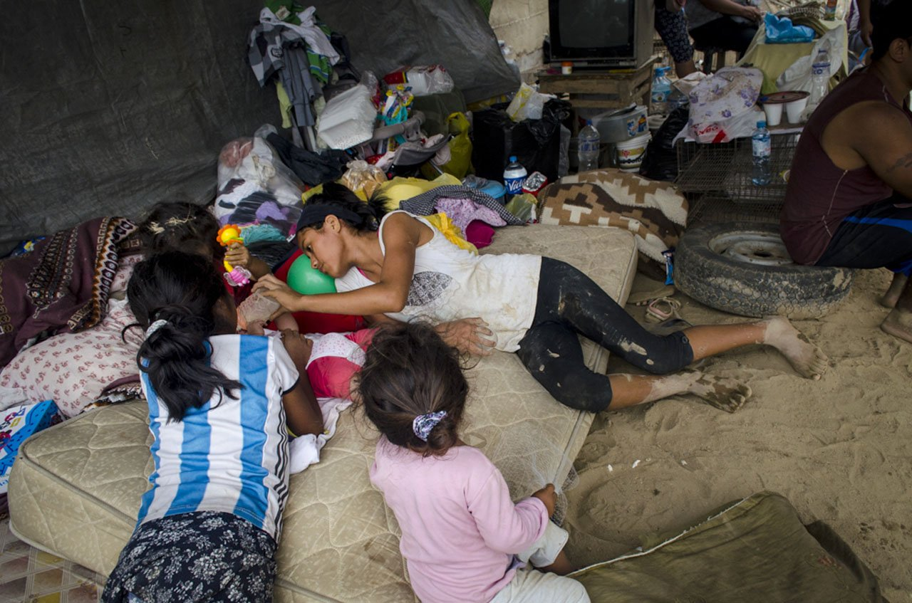

Cuando miles tuvieron que abandonar sus hogares
En 2017, tras las inundaciones provocadas por el Niño Costero, casi 300.000 personas en el norte de Perú fueron desplazadas. Familias enteras perdieron sus hogares y campos de cultivo, viéndose obligadas a dejar la agricultura y trasladarse a zonas temporales sin servicios básicos.
“Tuvimos que abandonar nuestras tierras y adaptarnos a vivir en refugios improvisados, sin agua ni luz” – relató un agricultor afectado.
Condiciones de vida
- Refugios improvisados con madera, plástico y cartón.
- Acceso limitado a agua potable, alimentos y atención médica.
- Familias viviendo en espacios reducidos y precarios.
- Interrupción total de la actividad agrícola y pérdida de ingresos.
Resiliencia y solidaridad
A pesar de las dificultades, muchas comunidades se organizaron para compartir recursos, construir caminos improvisados y proteger a los niños y ancianos. La solidaridad entre vecinos fue clave para sobrevivir hasta que llegó la ayuda de autoridades y voluntarios.
Fuentes: RPP – “Miles de personas desplazadas por inundaciones en Piura” • El Comercio – “El drama del desplazamiento masivo tras el Niño Costero de 2017”.